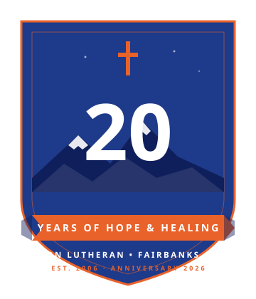
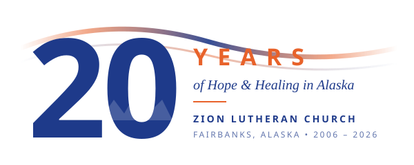

Concept 01

Commemorative Seal
A round badge in the tradition of military, civic, and church anniversary marks. Reads as official and commemorative — works as a square favicon, a hero badge, or a foil-stamp on print. Mountain silhouette and aurora pinpricks behind a centered "20" tie it to Alaska.
Best for: favicon, lapel pin, T-shirt back print, Saturday program cover.
Navy · primary
Aurora · hero
Small / favicon
Paper · print

Aurora · hero
Small
Paper · header

Bone
Small